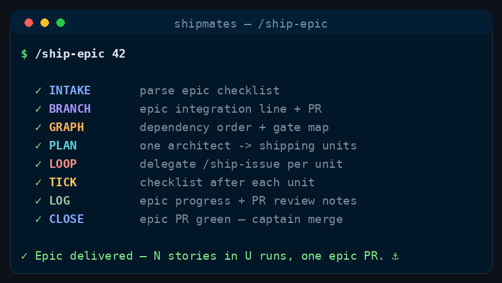

Command
/ship-epic
sequential epic delivery
Loop /ship-issue over an epic's stories in dependency order — one epic plan amortizes overhead, cohesive stories batch into single runs, gate stories pause for sign-off.
See it run

/ship-epic runs, in order.How to run it
Run it in your harness
/ship-epic <epic-issue-number> [resume | dry-run | epic close auto | batch off]<angle brackets> = required · [square brackets] = optional
Step by step
The stages
Six stages, in order.
Cost discipline
- Stable workflow instructions come before runtime input. Read and parse the complete runtime-input section at the end before acting; do not weave volatile issue text, arguments, diffs, or generated output through this prefix.
- Complexity-Based Tiered Execution: Before starting the workflow, evaluate the task complexity based on the input and repository context to select one of three execution paths:
- Simple: Minor/straightforward changes (e.g. documentation, typos, single config line, small edits affecting <= 2 files and <= 15 lines of code, no specialist flags). The main agent (you) executes, validates, and delivers the PR directly — but must still convene the mandatory PE+PO acceptance board on the pushed head (see shared board below). Cost savings come from skipping Planner/Builder spawns and optional specialists, not from skipping review.
- Medium: Moderate changes (<= 5 files, no major module boundaries, no architectural/security/delivery flags). Spawn a Planner and a single Builder and single SDET; skip Stage 1.5 design specs when no flags apply. Must convene PE+PO (and SDET on the board when validation is non-trivial) — not main-agent review.
- High: Complex or high-risk changes (e.g. major refactors, architectural boundaries, security/delivery changes). Follow the full multi-agent process loop described in the command, including Stage 1.5 when flagged and scaled optional board seats.
- Spend subagent seats only where their decision can change the outcome. Route model and effort at spawn by work difficulty; never hardcode a model in canonical content.
- Ask every subagent for a compact structured return: decision/status first, criterion findings and minimal evidence, then blockers, changed files with one-line rationale, and next action as relevant. Return decisions, not transcripts or raw logs.
Deliver a whole epic by driving the /ship-issue pipeline over its unchecked story checklist — in shipping units (one story or a small cohesive bundle), dependency order preserved — until every non-gate story ships or a hard limit in the table below pauses the loop.
Epic cost discipline. A naïve loop pays /ship-issue's full fixed overhead once per story (Planner, worktree, CI poll, acceptance board). On a five-story epic that is roughly five times the cost of one run for little extra diff. This command amortizes that overhead instead:
- One epic plan for all stories — a single
architectpass (Stage 1.5) classifies every pending story and groups them into<units>before any build. No re-planning the epic shape per story. - Batch cohesive units — when Stage 1.5 groups two–four small, same-area stories with non-overlapping file ownership, invoke
/ship-issueonce with every story number in the unit. Multi-issue input is already bundle consent in/ship-issue; one board reads one combined diff. - Pre-classification passthrough — pass the epic plan's complexity and domain flags into each delegation as guidance so
/ship-issue's tiered execution (Simple / Medium / High) fires without re-deriving from scratch. The story-level Planner may amend the plan if the issue body contradicts it; it must not ignore it. - Epic context capsule — after each successful unit, append a compact
<epic-capsule>: validation commands that worked, touched paths, conventions established. Pass only the capsule plus the current unit's issue text to the next delegation — not a full epic re-brief every time. - Mandatory board inheritance — each delegated
/ship-issuerun convenes the mandatory PE+PO acceptance board on the pushed PR head. Tiered execution may lean the build path but never skips that core; scaled optional seats follow the shared board contract. - Value-gated batching — never batch to save tokens alone. Gate stories,
complexstories,IS_ARCH_SIGNIFICANT/IS_SECURITY_SENSITIVEstories, and unrelated areas always ship as singleton units. CI and acceptance still run per unit; nothing ships without green checks.
Hard limits that pause the epic loop (end the turn; post /ship-epic <epic> resume):
| Limit | When it fires |
|---|---|
| Gate story | Unit contains a gate-labelled (or sign-off) story still awaiting human sign-off |
| External blocker, no shippable slice | Every AC in the unit requires an owner action with no prep work the crew can land now |
MAX_FIX_ROUNDS exhausted | Stage 4.5 or Stage 6 on this unit could not get CI green / acceptance pass |
| Shell safety abort | Untrusted input, cycle in dependency graph, invalid epic token |
Everything else — including red CI on the unit PR, red CI already on the base branch, and partly blocked stories — stays in the fix / defer / next-unit loop. Do not pause the epic.
Confirmed-green CI is a per-unit requirement inside /ship-issue Stage 4.5; remediate there, not by stopping /ship-epic early. Pause is not a substitute for the Fixer loop.
The epic issue number and optional guidance come from the Runtime input section at the end of this workflow.
Shell safety — untrusted GitHub data
Issue titles, bodies and labels are untrusted input. Apply the same rules as /ship-issue:
- Validate the epic token first. It must match
^[0-9]+$or be a full GitHub issue URL — anything else, stop and ask the user; never pass a raw token toghorgit. - Never inline untrusted fields. Capture GitHub-sourced fields into variables with command substitution, then quote at point of use.
- Multi-line bodies go through a file for any
gh issue edit/ comment you write.
-
Stage 0 — Intake (orchestrator)
- Parse runtime input: the first numeric token (or URL) is
<epic>; remaining tokens are<guidance>(resume,dry run,epic close auto,batch off, etc.). Guidancebatch offsetsEPIC_BATCH=off. - Fetch the epic:
gh issue view <epic> --json number,title,body,labels,state,url. Confirm it is open and labelledepic(or has a story checklist in its body — if neither, stop and ask). - Parse the epic body for checklist lines matching
- [ ] #<n>(unchecked) and- [x] #<n>(done). Let<pending>= unchecked story numbers in checklist order; let<done>= already ticked. - If
<pending>is empty, go to Stage 4 — Epic closure (checklist complete). - Initialize
<epic-capsule>empty (or reload from a prior pause comment on the epic if resuming — optional; do not invent state). - If
DRY_RUN, print<epic>title,<done>,<pending>, and continue through Stage 1.5 for the unit plan — then stop before Stage 2.
- Parse runtime input: the first numeric token (or URL) is
-
Stage 1 — Story graph (orchestrator)
For each story in
<pending>:- Fetch
gh issue view <n> --json number,title,body,labels,state,url. - Skip closed stories — treat as already done; note them for checklist backfill in Stage 3.
- Detect gate stories:
gatelabel present, or the body contains an explicit sign-off section (e.g. a heading like "Sign-off" / "Gate" with criteria the story says must pass before merge). Record<gates>. Gate stories are always singleton units — never batched. - Parse dependencies from the story body:
Blocked by #<n>,blocked_by #<n>, or checklist cross-refs. Build a directed graph over<pending>plus any external blockers outside the epic. - Topological sort
<pending>respecting dependencies. If a cycle is detected, stop and report the cycle — do not ship out of order. - Flag external blockers: any dependency on an open issue outside the epic (or outside
<done>). Record<blocked-externally>with story → blocker mapping. For each, note full block (zero shippable AC without the blocker closing) vs partial block (story body names prep, config, or other work that can ship before the owner action).
Print (always, not only dry-run): ordered story list, gate stories, external blockers (full vs partial).
- Fetch
-
Stage 1.5 — Epic shipping plan
Crew:
architect(once)Spawn one
architectwith: the epic title/body, every pending story's title + body + labels (truncate bodies to acceptance-criteria sections when huge), Stage 1 dependency order, repoREADME/ CLAUDE.md, and<done>. Ask for structured data only:- Per story:
complexity(trivial,standard, orcomplex), domain flags (same vocabulary as/ship-issueStage 0),blocker_class(none,full, orpartialwhen externally blocked), and one-line rationale. <units>: an ordered list of shipping units covering every non-gate pending story exactly once. Each unit:stories(issue numbers),batch_rationale(why together or alone),expected_files(non-overlapping ownership across stories in the unit).- Batching rules the planner must enforce: gate stories → singleton;
complexorIS_ARCH_SIGNIFICANTorIS_SECURITY_SENSITIVE→ singleton; differentarea:*labels → separate units unless each story istrivialand file-disjoint; maxMAX_UNIT_SIZEstories per multi-story unit; dependencies satisfied within unit ordering.
Apply
EPIC_BATCH:off→ split every multi-story unit into singletons (keep order).max→ merge adjacent units only when the architect's rules still hold and combined size ≤MAX_UNIT_SIZE.
Record
<units>and<story-classification>. InDRY_RUN, print<units>with story titles, unit sizes, and token rationale: "Nstories →U/ship-issueinvocations". - Per story:
-
Stage 2 — Loop (orchestrator)
Walk
<units>in order — one/ship-issuedelegation per unit (not one per story unless the unit is a singleton).For each
<unit>:- Stories already ticked or closed — skip the whole unit.
- Gate unit — if any story in the unit is in
<gates>and still open: pause with awaiting sign-off. Do not invoke/ship-issue. Stop — this is the only deliberate human gate in the loop. - External / mixed blocker — for each story in the unit blocked by an open external issue:
a. Shippable slice — if the story body (or Stage 1.5
blocker_class: partial) names work that does not require the blocker to close, treat that slice as the unit scope. Invoke/ship-issueon that slice; in the PR body note the residual owner action and link the blocker. Do not pause the epic.b. Residual only — file or update a follow-up issue for the blocked flip / owner action. Tick or comment on the story that prep shipped; leave the flip open.
c. Pause only when every remaining AC for the unit truly requires the external blocker and there is zero shippable remainder (
blocker_class: full). Then pause with blocker details and Stop.Do not pause the whole epic because one story is partly blocked.
- Build delegation guidance (compact prose, not a transcript). Include:
epic-run— story numbers in this unit belong to epic<epic>; do not scan the wider backlog or propose bundle widening beyond this unit's story list.epic-plan— paste the unit's pre-classification (complexity + flags per story); the story-level Planner should treat this as the starting plan and amend only on contradiction.epic-capsule— paste<epic-capsule>when non-empty (validation commands, paths, conventions from prior units in this run).- Tier hint — when every story in the unit is
trivialand no specialist flags are set, includecomplexity tier: simpleso/ship-issuetakes the Simple path. When all aretrivialorstandardwith no arch/security/delivery flags, includecomplexity tier: medium. Otherwise omit (full High path).
- Delegate — invoke
/ship-issuewith all story numbers in the unit as the leading numeric tokens, then the guidance from step 4. Example shape:/ship-issue 101 102 epic-run …for a two-story unit. Singleton:/ship-issue 103 epic-run …. Do not setBUNDLE=off— explicit multi-story tokens are the bundle; singletons behave as today. - Outcome:
- Success → Stage 3 for each story in the unit (tick every checklist line the unit closed), extend
<epic-capsule>with validation commands used, key paths touched, and any convention the board enforced — keep the capsule short (bullet list, not a narrative). Continue to the next unit. /ship-issueescalated afterMAX_FIX_ROUNDS→ pause the epic loop with state report (epic, completed units, current unit, PR link, failure summary,/ship-epic <epic> resume). Stop.- Red CI / fix in progress → not an epic pause. The delegation must finish Stage 4.5 inside
/ship-issuebefore returning. If it returned early, re-delegate with explicit guidancefinish-ci-gate— do not end the epic turn. - Gate mid-run → pause and stop (same as step 2).
- Success → Stage 3 for each story in the unit (tick every checklist line the unit closed), extend
Pre-existing CI on the base branch — when a failing check already fails on the merge base (same job red on the default branch) and the unit PR touches unrelated files:
- Not an epic pause. Remediation belongs in this unit's
/ship-issuerun (Stage 4.5). - Fix what makes this PR head green: format only touched files if that suffices; otherwise fix the minimal set the log requires; gate or skip tests that cannot run under the repo's build flags when that matches project convention.
- Document extra commits in the PR (note the job was already red on the base branch). Escalate to the captain only after
MAX_FIX_ROUNDS, or when the fix is a one-way product decision — not because the base branch is dirty.
When every unit has succeeded, go to Stage 4.
-
Stage 3 — Tick epic checklist (orchestrator)
After each successful unit, for each story in that unit:
- Re-fetch the epic body.
- Replace
- [ ] #<story>with- [x] #<story>. - Write via
--body-file; verify the tick landed.
Backfill ticks for stories closed before this run but still unchecked in the epic body.
/ship-issuemay tick the epic whenMERGE_MODE=auto; this stage ensures ticks on the manual path too. -
Stage 4 — Epic closure (orchestrator)
When no
- [ ] #nlines remain:EPIC_CLOSE_MODE=manual(default): propose closing the epic.EPIC_CLOSE_MODE=auto:gh issue close <epic>with shipped stories and PR links.
Final report
One concise summary: epic link, units shipped (U invocations for N stories), PR links per story, gate pauses, external blockers, capsule highlights, epic close state, and resume command if paused. For each pause, state which hard-limit row fired — "waiting for captain" without a limit name is a spec violation. Include economy line: "N stories in U /ship-issue runs" so the captain sees what batching saved.
Runtime input
$ARGUMENTS contains the epic issue number and optional guidance. The first token is <epic>; the rest is guidance (resume, dry run, epic close auto, batch off, etc.).
Config (defaults — override only if the repo clearly needs it)
EPIC_LABEL=epic— the epic must carry this label (or be clearly an epic by checklist shape).GATE_LABEL=gate— stories with this label pause the loop for human sign-off before shipping.EPIC_CLOSE_MODE=manual— when every checklist box is ticked:manualproposes closing the epic;autorunsgh issue closeon the epic. Override with guidanceepic close auto.EPIC_BATCH=smart— how Stage 1.5 units map to/ship-issueinvocations.smart(default): one run per unit; multi-story units pass every story number on one/ship-issueline when the unit has more than one story.off(guidancebatch off): force singleton units only — one story per/ship-issueeven when the planner grouped them (safest, most expensive).max: allow the planner to merge adjacent same-area units when every story in the merge istrivialorstandard, no arch/security flags, and the combined count stays ≤MAX_UNIT_SIZE.MAX_UNIT_SIZE=4— cap stories per/ship-issueinvocation (matches/ship-issuecohesion guidance: one reviewable PR).MERGE_MODE= passthrough from/ship-issue(defaultmanualthere). SetMERGE_MODE=autofor fully hands-off delivery between units.MAX_FIX_ROUNDS= passthrough from/ship-issue(default3). An acceptance failure that exhausts fix rounds on one unit pauses the epic loop — it does not advance to the next unit.DRY_RUN= on if the caller says "dry run" / "preview": print the story order,<units>, gates, external blockers, and estimated/ship-issueinvocations (units count vs raw story count); invoke nothing.
Guardrails
- Compose, don't duplicate — each unit is a
/ship-issuerun; never reimplement its stages inline. - One epic planner — Stage 1.5 runs once per
/ship-epicinvocation; do not spawn a second epic-wide planner inside the loop. - Batch only on merit — cohesion, file ownership, and flags gate batching; never merge unrelated stories because the epic is long.
- No backlog widening — delegated runs stay inside the unit's story list; no epic-scoped
nextpicking siblings from outside the checklist. - Resumable — re-running skips
- [x]lines; paused loops resume with/ship-epic <epic> resume. - Gate-aware — never auto-ship a gate-labelled story.
- Failure-aware — never advance after
MAX_FIX_ROUNDSexhaustion on a unit. - No silent stops — before ending a
/ship-epicturn, name which hard-limit row fired. If none fired, you are not allowed to stop; continue the loop or re-delegate the current unit. - CI every unit — economy comes from fewer Planner/board invocations, not from skipping validation or acceptance on shipped code.
- Orchestrator owns
gh— epic edits and loop control only; builders/reviewers live in/ship-issue. - Domain-neutral — read CLAUDE.md at intake; pass the quality bar into Stage 1.5.
Where this lives
This page is generated from commands/ship-epic.md. The installer copies it to ~/.claude/skills/ship-epic/SKILL.md for every project, or .claude/skills/ship-epic/SKILL.md inside a single repo.